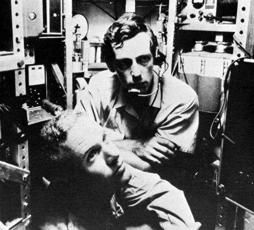

Em 1960, Jacques Piccard e Don Walsh pilotaram o Trieste durante o mergulho até o ponto mais profundo da Terra, o Challenger Deep, situado a 10.916 metros de profundidade.
O Mar das Felipinas estava agitado nessa manhã de 23 de janeiro de 1960, dificultando enormemente o lançamento do batiscafo Trieste da marinha norte-americana na região abissal.
No entanto, uma vez iniciado, o mergulho mais profundo da história da humanidade na verdade era meio entediante, segundo Don Walsh. O tenente da marinha norte-americana de 28 anos pilotou o Trieste ao lado do oceanógrafo suíço Jacques Piccard durante as nove horas de mergulho até o ponto mais profundo do planeta, o Challenger Deep, cerca de 320 quilômetros a sudoeste da Ilha de Guam, na Fossa das Marianas. Mas o tédio foi interrompido por um momento de puro terror, acrescenta Walsh.
Eles já haviam percorrido dois terços do percurso até o fundo quando ouviram um estrondo vindo do casco do pequeno batiscafo autônomo. Walsh e Piccard trocaram um olhar furtivo, já se preparando para o fim. Mas nada aconteceu. “Foi só aquele barulho forte, uma espécie de explosão, e mais nada”, diz Walsh.

Posteriormente, ficaram sabendo que uma janela de Plexiglas externa havia se fissurado com a pressão que, segundo as medições da dupla, era de uma tonelada por centímetro quadrado – quase mil vezes maior que a da superfície. A janela rachada “não representava um risco vital, pelo menos não de imediato”, diz Walsh, dando de ombros.
O mergulho do Trieste foi mais do que um novo recorde exploratório. Com ele, Piccard e Walsh abriram uma janela científica para o fundo do oceano, até então amplamente considerado como desprovido de vida. Ao alcançar o fundo, a dupla usou lâmpadas de vapor de mercúrio para explorar os arredores, envoltos na mais completa escuridão, e se surpreenderam com o que viram. “Sem dúvida, a descoberta mais interessante foi um peixe-achatado que podíamos ver através da escotilha, tentando se dissimular no leito do oceano”, disse depois Piccard. “Ficamos impressionados de encontrar formas de vida marinha mais desenvolvidas lá no fundo”.
Hoje em dia, os cientistas continuam a estudar o ecossistema extraordinariamente complexo das profundezas abissais do oceano, formado por centenas de espécies de foraminíferos – organismos unicelulares providos de uma carapaça – que somam mais da metade de toda a matéria viva e compõem o elo mais próximo do início da cadeia alimentar oceânica. No lodo do Challenger Deep, os cientistas encontraram mais de 400 espécies, cujo DNA se assemelha a algumas das primeiras formas de vida terrestre.
Jacques Piccard, falecido em 2008, passou o restante da vida explorando o mundo subaquático – do qual foi um dos pioneiros –, tendo construído posteriormente quatro mesoscafos (submarinos de meia profundidade).
Don Walsh, que comandou o Trieste, tornou-se comandante de submarinos da marinha dos EUA e um dos mais eminentes oceanógrafos do mundo. Também realizou mais de 50 expedições às regiões polares e continuou a explorar as profundezas do oceano.
Walsh continua a percorrer os mares dois ou três meses por ano, principalmente para compartilhar sua visão sobre o estado dos oceanos com responsáveis por políticas públicas e cidadãos em geral. Preocupado, ele alerta que as ameaças (acidificação, pesca excessiva e perda de oxigênio decorrente das mudanças climáticas globais) são cada vez maiores, enquanto o estudo e a defesa dos oceanos carecem de recursos.
“Atualmente, o planeta se encontra numa situação extremamente instável, com os níveis do mar subindo em razão das mudanças climáticas e o gelo derretendo nas regiões polares”, diz. “As temperaturas e correntes marinhas vêm mudando sem que se saiba exatamente as razões”.
“Os cientistas têm feito um excelente trabalho nos oceanos”, continua. “O problema é que ainda não é o suficiente. Costumo chamar a oceanografia de ‘grande ciência’, pois é preciso navios, infraestrutura, muito tempo e recursos imensos para estudar esses processos de maneira mais aprofundada. Mas é preciso lembrar o que está em jogo: nada menos que o futuro do planeta em que vivemos!”
Vencedor de um Oscar de melhor diretor, James Cameron é também o explorador que, em 26 de março de 2012, 52 anos depois do Trieste, alcançou a Depressão Challenger a bordo de um submersível especialmente projetado para a expedição. Foi o primeiro mergulho solo até a região mais profunda do oceano.